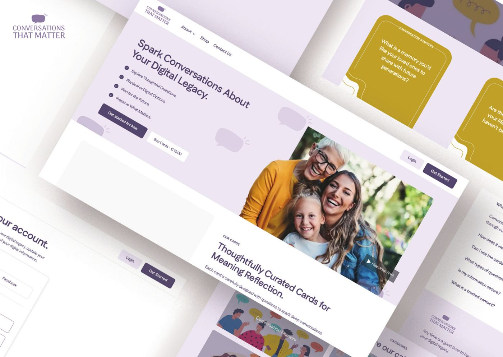

The toolkitDe toolkit
Five colours, from easy openers to harder questionsVijf kleuren, van makkelijke openers tot moeilijkere vragen
Nurses asked for colour-coding so people can pick a topic that fits their energy that day. The cards are large and readable, with lined space on the back to write answers by hand.Verpleegkundigen vroegen om kleurcodes, zodat mensen een onderwerp kunnen kiezen dat past bij hun energie van die dag. De kaarten zijn groot en goed leesbaar, met ruimte op de achterkant om antwoorden op te schrijven.
Why we startedWaarom we begonnen
We leave parts of ourselves online, but rarely talk about what should happen to themWe laten delen van onszelf online achter, maar praten zelden over wat ermee moet gebeuren
Photographs, messages, accounts and files stay behind. We surveyed 190 people in India, Nigeria, Russia and the Netherlands to understand how ready they feel.Foto's, berichten, accounts en bestanden blijven achter. We ondervroegen 190 mensen in India, Nigeria, Rusland en Nederland over hoe voorbereid ze zich voelen.
had never thought about what happens to their online accounts and files after their lifetime.had nooit nagedacht over wat er na hun leven met hun online accounts en bestanden gebeurt.
were split on whether their loved ones could access their digital information. Many did not know.waren verdeeld over de vraag of hun dierbaren bij hun digitale informatie kunnen. Velen wisten het niet.
said simple tools or services would help them plan for their digital accounts.zei dat eenvoudige hulpmiddelen of diensten zouden helpen bij het plannen voor hun digitale accounts.
In the Netherlands, the national campaign Data na de Dood found that 85% of people believe their digital legacy should be in order, while 70% had never heard the term.In Nederland bleek uit de campagne Data na de Dood dat 85% van de mensen vindt dat hun digitale nalatenschap op orde moet zijn, terwijl 70% de term nog nooit had gehoord.
The full deckHet volledige spel
Browse the cardsBekijk de kaarten
Skip any card you like. There is no right order.De kaarten zijn in het Engels; de Nederlandse vertaling staat onder elke kaart. Sla gerust kaarten over, er is geen goede volgorde.
Cards and website togetherKaarten en website samen
Talk face to face, then keep a recordPraat face-to-face en leg het daarna vast
The cardsDe kaarten
For the kitchen table, a hospice room or a group. Use them alone, with family, or with a care professional.Voor de keukentafel, een hospicekamer of een groep. Alleen, met familie of met een zorgprofessional.
The companion websiteDe bijbehorende website
- Record your answers and update them over timeLeg je antwoorden vast en pas ze later aan
- Name legacy contacts you trustWijs vertrouwde contactpersonen aan
- Keep instructions for accounts in a digital vaultBewaar instructies voor accounts in een digitale kluis
The toolkit is a starting point, not a complete solution. It does not use AI: many people in our survey preferred simple tools without it.De toolkit is een begin, geen complete oplossing. Er zit geen AI in: veel mensen in ons onderzoek gaven de voorkeur aan eenvoudige hulpmiddelen zonder AI.

What we heardWat we hoorden
Shaped with patients, families and care professionalsOntwikkeld met patiënten, families en zorgprofessionals
“We have so many tools for the start of our lives, but almost nothing for the end.”
“Designing for end-of-life care means addressing the needs of all stakeholders in the triangle: patients, families, and caregivers.”
“Legacy isn’t only about the past; it’s about enabling better connections in the present and creating lasting memories for the future.”
“Your tool could also help socially isolated people or those in long-term recovery who struggle to communicate their needs.”
“This isn’t just about digital legacy. It’s about helping people feel seen, heard, and remembered in a way that feels meaningful.”
“We try not to overwhelm patients with too many decisions at once, and this tool could help.”
Pakhuis de Zwijger · Tuesday 27 October 2026dinsdag 27 oktober 2026
From conversation to access, consent and careVan gesprek naar toegang, toestemming en zorg
A conversation is one way to begin. Our panel explores what it cannot solve on its own: practical access, what should be preserved, and the role of technology and AI.Een gesprek is een begin. Ons panel verkent wat een gesprek alleen niet oplost: praktische toegang, wat bewaard moet blijven en de rol van technologie en AI.
- 19:30
- Welcome, audience polls and survey findingsWelkom, publieksvragen en onderzoeksresultaten
- 19:47
- The toolkit: cards, website and design decisionsDe toolkit: kaarten, website en ontwerpkeuzes
- 20:00
- Panel conversationPanelgesprek
- 21:00
- Your questionsJouw vragen
- 21:20
- Closing reflectionAfsluitende reflectie
Who made thisWie maakten dit
Designed by four designers from four countriesOntworpen door vier ontwerpers uit vier landen
Developed during the Master Digital Design at Amsterdam University of Applied Sciences, under the guidance of Marije de Haas and Irene Kamp. Presented at Relating Systems Thinking and Design (RSD14), OCAD University Toronto, and at the Care Access symposium at Museum Tot Zover.Ontwikkeld tijdens de Master Digital Design aan de Hogeschool van Amsterdam, onder begeleiding van Marije de Haas en Irene Kamp. Gepresenteerd op Relating Systems Thinking and Design (RSD14), OCAD University Toronto, en op het symposium Care Access in Museum Tot Zover.
Bring the cards to your communityBreng de kaarten naar jouw buurt
We run workshops with residents, care teams and community spaces. Get in touch to try the toolkit or collaborate.We organiseren workshops met bewoners, zorgteams en buurtplekken. Neem contact op om de toolkit uit te proberen of samen te werken.
muskanjain.nid@gmail.comRead the full project story on BehanceLees het volledige projectverhaal op Behance →